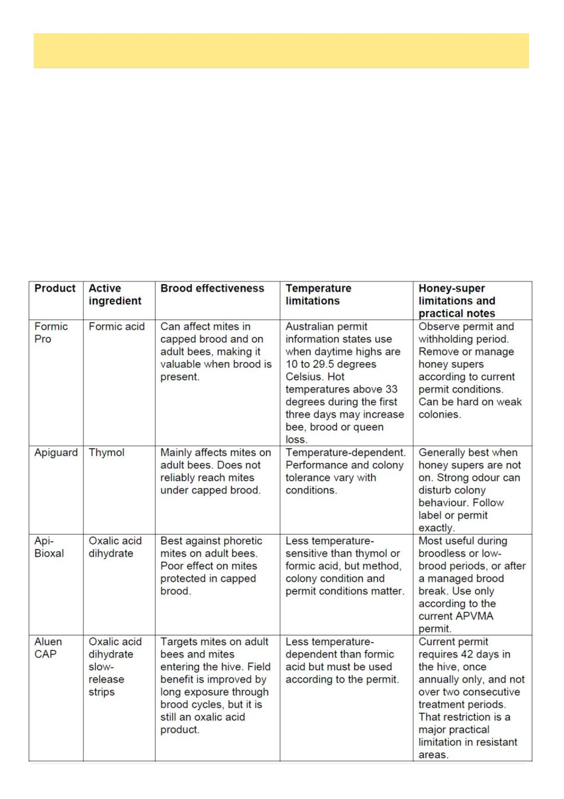

16
Australian Bee Journal
Resistant Varroa, Fewer Legal Tools And A Harder Road Ahead, cont’d
(Continued from page 14)
2 Biosecurity Queensland, ―Varroa mite showing resistance to
chemical
treatments‖,
2
March
2026.
https://
www.dpi.qld.gov.au/news-media/news/varroa-mite-showing-
resistance-to-chemical-treatments
3 AHBIC, ―Biosecurity Update, Resistant Varroa Mite‖, 2
April 2026, amitraz resistance confirmed in Queensland.
https://honeybee.org.au/ahbic-biosecurity-update-resistant-
varroa-mite-apr-2026
4 AHBIC, ―Biosecurity Update, Resistant Varroa Mite‖, 10
April 2026, amitraz resistance confirmed in New South
Wales.
https://honeybee.org.au/ahbic-biosecurity-update-
resistant-varroa-mite-10-april-2026
5 AHBIC, ―Biosecurity Update, Varroa Synthetic Chemical
Resistance
Management‖,
https://honeybee.org.au/ahbic-
biosecurity-update-management-resistant-varroa-mite-29-
april-2026
6 Australian Government Outbreak website, ―Varroa mite,
Varroa destructor‖, current response and miticide resistance
information,
accessed
June
2026.
https://
www.outbreak.gov.au/current-outbreaks/varroa-mite
7 National Varroa Mite Management Program, ―Varroa chem-
ical control options‖, current as 2 February 2026.
www.varroa.org.au/chemicals
8 National Varroa Mite Management Program, ―Formic Pro‖,
permit and use conditions. https://www.varroa.org.au/formic-
pro
9 National Varroa Mite Management Program, ―Aluen CAP‖,
permit and use conditions. https://www.varroa.org.au/aluen-
cap
10 APVMA Permit PER94609, Api-Bioxal oxalic acid prod-
ucts
for
varroa
control.
https://permits.apvma.gov.au/
PER94609.PDF
11 APVMA Permit PER95790, Aluen CAP slow-release oxal-
ic acid strips for varroa control. https://permits.apvma.gov.au/
PER95790.PDF
Remaining Legal Non-Synthetic Treatment Options